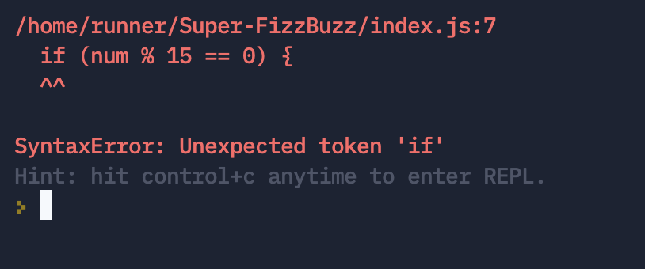

Problem Solving
Real-life Examples of my Problem Solving
Example 1: Getting blocked on a simple problem
Something simple that I got blocked on (and honestly I get blocked on stuff as simple as this embarrassingly often) is forgetting to put the brackets at the end of a function. While working on the built-in methods JavaScript Kata I was working on the function that capitalizes the first letter of each word in a sentence I had what I thought should have been a working function that passed the test. But, alas, no go. I worked through my pseudo-code line-by-line to check that I had done everything needed. Then I went back and commented out the last lines I had done, yep those parts of the function work. Next, I checked the documentation on W3 and MDN. It looked like I had everything right, but then flicking between the documentation and my code I realised I’d missed the crucial () at the end of the method. Once added, viola, it passes. I felt a bit silly like I was stuck on something so simple, what a waste of time. But every time you do something wrong you learn a little bit more on. How to not do it again. I learned that when checking through the code to ask myself “does it need anything else?”. Also, to read error messages carefully (more so for other times I’ve done this, since the test error message didn’t supply this crucial information for me).
Example 2: Solving a problem in an elegant way
A time I solved a problem in an elegant way, was in the grade book KATA we’d been tasked with completing. I had been struggling to get my head around using the arrow function syntax as opposed to the old school way of writing functions. But given we’d just been prompted to try using arrow syntax for single line functions, I thought a couple of the functions could be written the ES6 way. Instead of writing the function like normal and refactoring to the arrow function, I challenged myself to write it that way first time. I first looked at the EDA example of arrow functions and wrote out on a sticky-note on my desk the basic structure of how they work so I could understand it more thoroughly. Then I psuedocoded what I wanted my code to do, and finally I jumped into it and wrote out how I thought the function should go. I had to look at some more documentation (especially for accessing the object properties with dot vs bracket notation) and eventually I got it working! I felt super accomplished and stoked that I could do it without first writing then refactoring.
Some Problem Solving techniques
Pseudocode
I'm a huge list person. Love writing down a list of things I need to do
and crossing each item off one by one. Even more exciting is writing a
list for a list! That's basically what pseudocoding is. Writing out in
plain english, via commenting your code, step-by-step of what you want
your code to do or achieve. Personally, I really enjoy this method and
find it super helpful to see what it is you're tying to achieve and
where you're at right now.
//this is a comment
//step 1
//step 2
//and so on
Trying Something
Sometimes I can find it difficult to wrap my head around just trying something and using that failure to figure out what to do next. Even though it can be scary, I'm getting used to it and using that feedback to keep moving toward the correct answer to a problem. Someone super smart once said "Sometimes you just have to throw some pasta at a wall and see what sticks."
Rubber Ducky Method
The Rubber Ducky Method is surprisingly less about the rubber ducky and more about hearing yourself explain something out loud to make more sense of it for yourself. It is described as explaining, verbally or written, in simple terms what you're trying to get your code to do. Then going through more detail of the steps you need to do. Much like psuedocoding but better for people that are verbal rather than visual learners. I find it helpful explaining to my partner when I can't get something to work (especially since she has zero idea of coding at all). So I can see how this method can be helpful when there aren't any human ears around to listen in.
Error Messages
While the error messages that come up in coding can look very intimidating, they actually dish out some very helpful information. For example, the error message below shows that it wasn't expecting the token 'if' to be there. That alludes to there is probably a missing character of '{' before the if statement. The error message also tells us where the error is occurring, in this case on line 7.
Console.log()
A very helpful method that JS has built in is console.log(). This method allows you to 'log' (basically print out) to the console whatever you have identified between the parentheses. This can be helpful to see if what you're trying to achieve at this stage of he code is executing correctly. I find this to be a very handy developer tool and helps to see things visually since a lot of the time when you execute code nothing really appears to be happening.
Ah, our good friend Google! As previously stated, I use Google a lot. Almost any problem you've encountered, someone else has as well. And while there are a million ways to write a piece of code, reading documentation (my favourites are Mozilla Development and W3), or question forums like stackflow and reddit are great places to help get unblocked.
Asking Peers/Coaches for help
Just like if you have an issue someone online has probably had the same one, your peers and coaches have probably had that issue as well. Asking for help, personally, is pretty scary, but it can be really helpful to get a point in the right direction. And even though I don't like asking for help, there are usually other people that have had the same or similar issues so you're not just helping yourself but the eco-system of budding coders as a whole.
Reflection
A big part of getting better is reflection. Research shows that just 5 mins of reflection at the end of the day can help to solidify learning. And problem solving is learning. Reflecting on what sorts of problem solving did and didn't work for you will help you hone in your problem solving skills and be able to work through issues a bit quicker each time.